Префектура Окинава · Такэтоми · природа и фото
Остров Такэтоми: красная черепица, коралловые улочки и как всё это снять
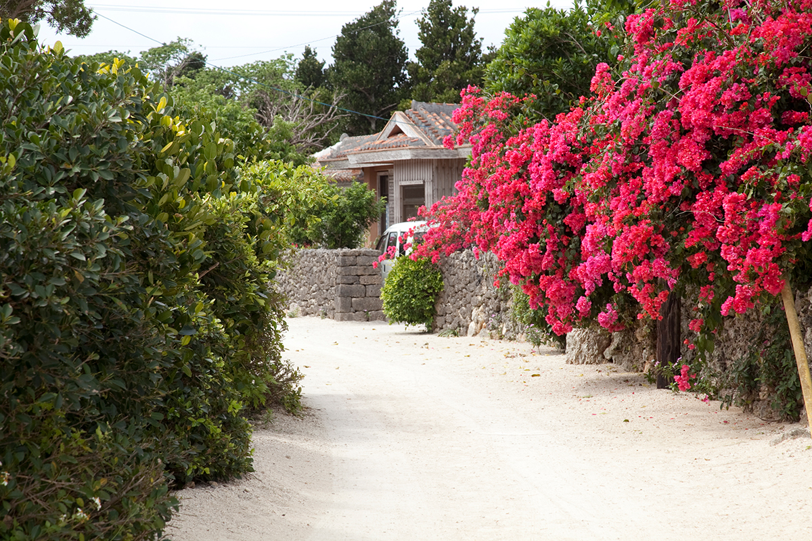
До Такэтоми от Исигаки плыть около четверти часа, и за это время словно переносишься в старую Окинаву. Остров маленький и плоский, а снимать на нём хочется на каждом углу.
Остров
Деревня, которую берегут всем миром
Такэтоми входит в группу островов Яэяма на крайнем юго-западе префектуры Окинава. Это поднявшийся над морем коралловый риф, поэтому гор и рек здесь нет: площадь острова 5,43 кв. км, окружность 9,2 км, а самая высокая точка поднимается всего на 33,1 м. По данным 2024 года на острове жили 329 человек.
Жизнь сосредоточена в трёх деревнях. Дома под рюкюской красной черепицей стоят за оградами из кораллового камня, а между ними тянутся улочки, засыпанные белым коралловым песком. Такой облик старой Окинавы мало где сохранился, и жители держатся за него сознательно: ради пейзажа и местной культуры они приняли «Хартию острова Такэтоми» со своими правилами. Отсюда родом и народная песня Яэямы «Асатоя юнта».
По острову ходят автобус и такси, есть прокат велосипедов, но самый подходящий здешнему темпу транспорт это повозка, запряжённая водяным буйволом. Местные бабушки учат приезжих играть на сансине и ткать узорную ткань минса, а осенью на острове проходит праздник посева Танэдори.
Майко Фукуи провела на Такэтоми три дня и рассказала, как снимать так, чтобы на фотографии остались и воздух, и запахи поездки. Жила она в HOSHINOYA Taketomi Island: гостиница открылась в 2012 году, построена как ещё одна деревня с красными крышами и с помощью островитян знакомит гостей с местными обычаями, праздниками и едой.
День 1
Причал, сиса и травяной чай
Остров встречает тишиной: после маленького причала начинаются каменные ограды, за ними одноэтажные дома, и южный ветер в открытом окне кажется главным событием дня.
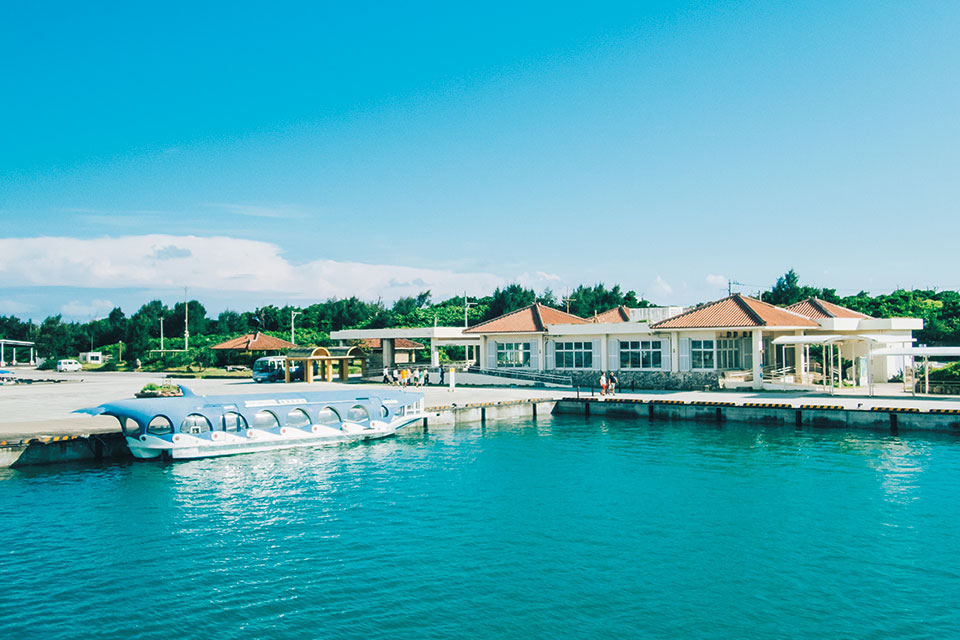
На каждой крыше сидит сиса, лев-хранитель, который защищает дом от злой судьбы. На Такэтоми их лепят из известкового раствора и обломков черепицы, поэтому морды у всех разные и очень выразительные.
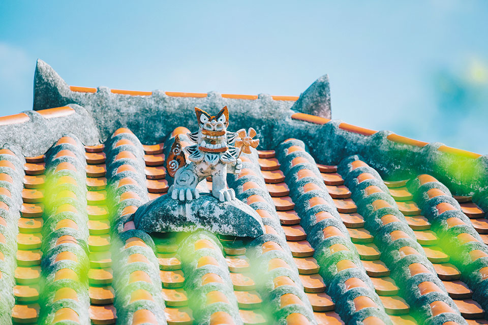
Врача на острове долго не было, и в каждой семье хранили свой рецепт травяного чая. Эти «чаи жизни» заваривают и сегодня: из листьев альпинии «гэтто», полыни «футиба», куркумы, а ещё «сампин», окинавский жасминовый чай. Смешивать их можно по своему вкусу.
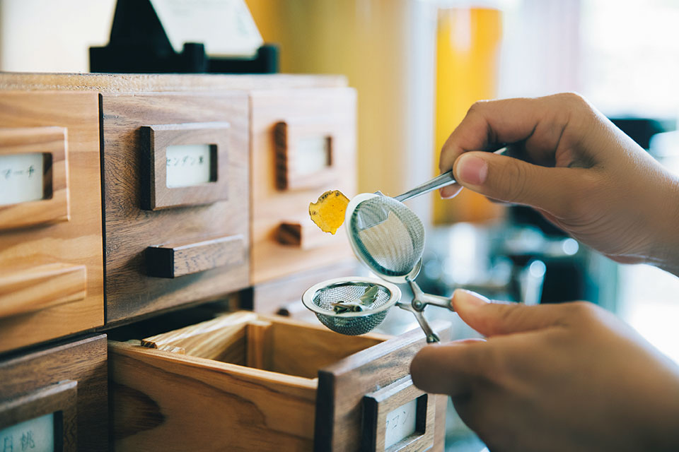
Вечером Фукуи ужинала рюкюской «новой кухней»: южные морепродукты, батат, овощи и травы с собственного огорода приготовлены французскими приёмами. А после ужина над головой оказалось небо, усыпанное звёздами.
День 2
Буйволы, сансин и звёзды в бассейне
Утро начинается с глубокого дыхания на пляже Аияру, куда только что поднялось солнце. На завтрак можно взять коробку с рюкюскими закусками, кашу с мягким тофу «юси-дофу» или буйабес.
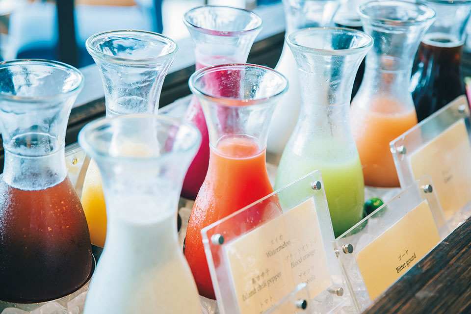
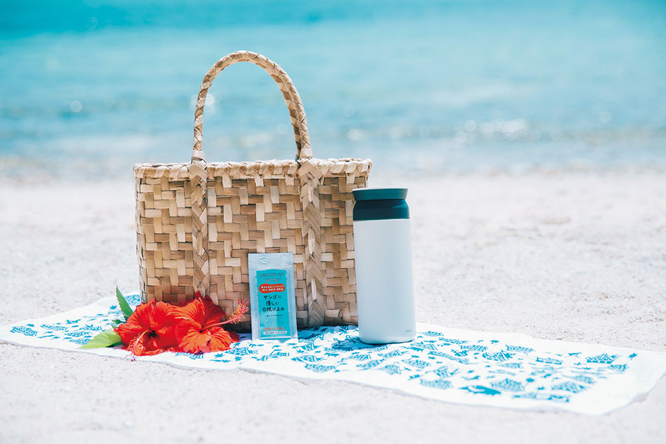
После завтрака можно гулять у моря или объехать деревню на буйволе. Повозка движется медленнее пешехода, и это лучшее время, пока с первыми катерами не приплыли туристы.
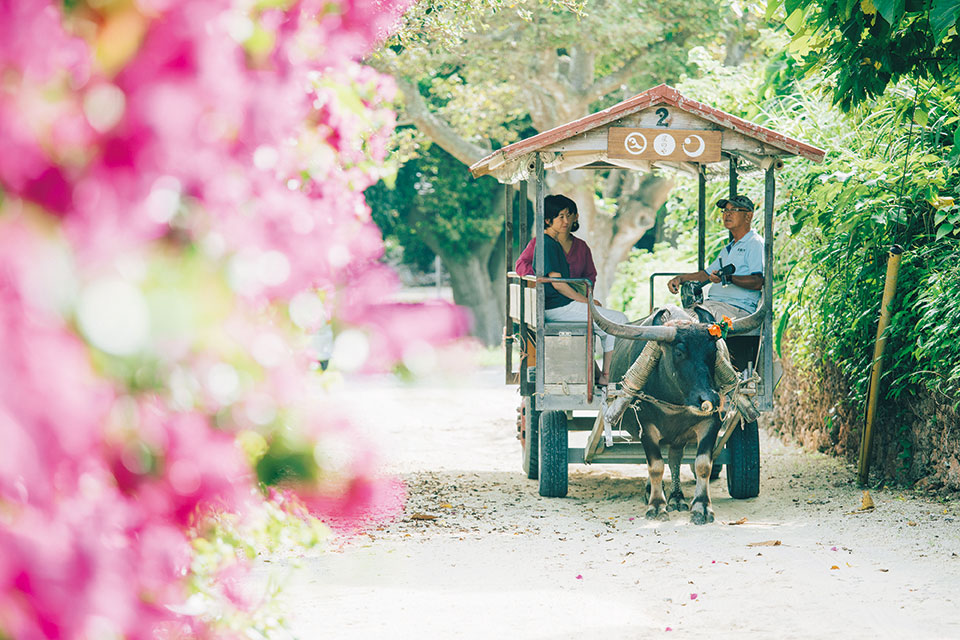
Днём Фукуи брала урок сансина у островной бабушки, которая побеждала в конкурсах исполнителей. Простую мелодию, по её словам, можно разучить минут за десять.
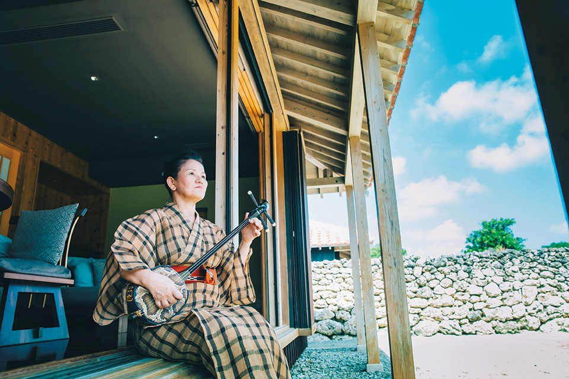
Для еды у фотографа есть отдельное правило: свет нужно поставить так, чтобы тень падала вперёд, к объективу. Дальше можно отойти и снимать с зумом или, наоборот, подойти вплотную в режиме макро.
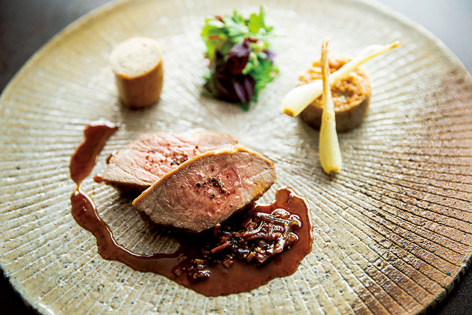
Воздух на Такэтоми чистый, огни городов сюда не дотягиваются, поэтому ночью звёзды заполняют всё небо.
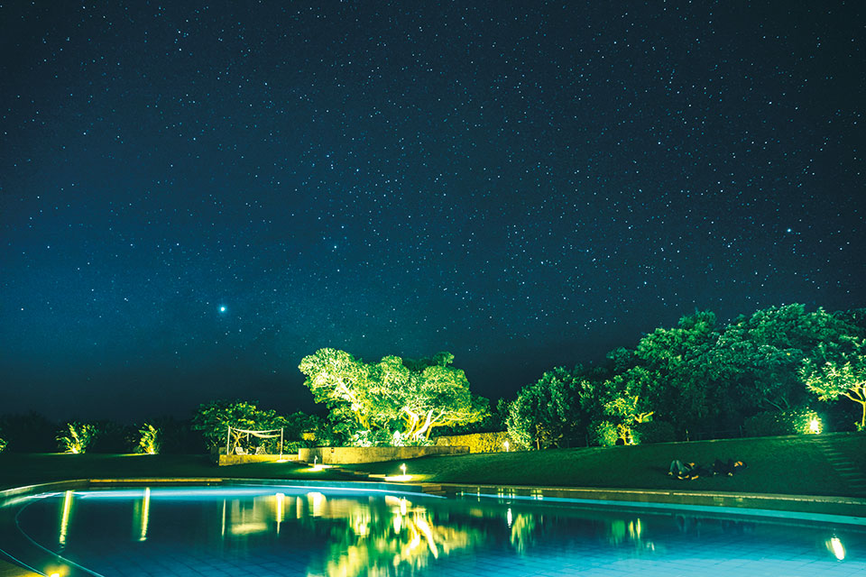
День 3
Рассвет и звёздный песок
В последнее утро на берегу встречают восход солнца растяжкой и глубоким дыханием. На пляже Кайдзи стоит зачерпнуть горсть песка: в ней найдутся крошечные песчинки в форме звёздочек.
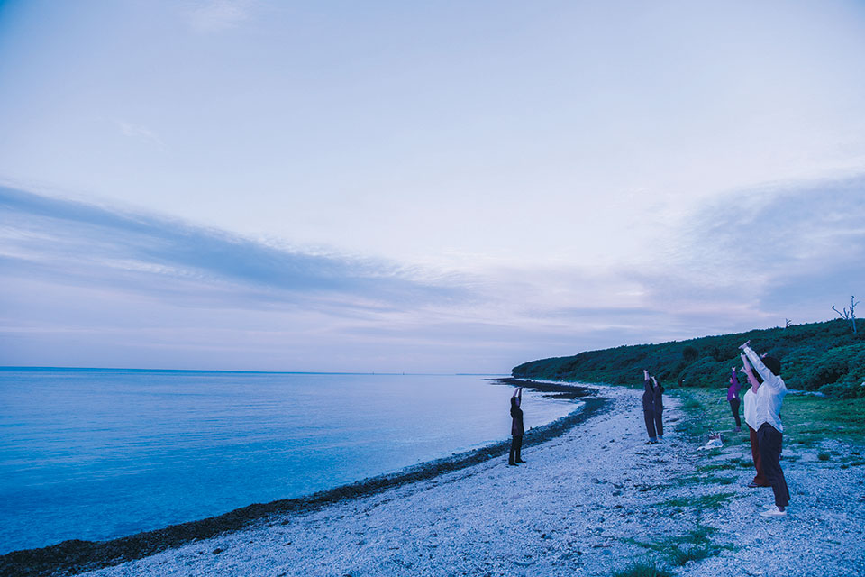
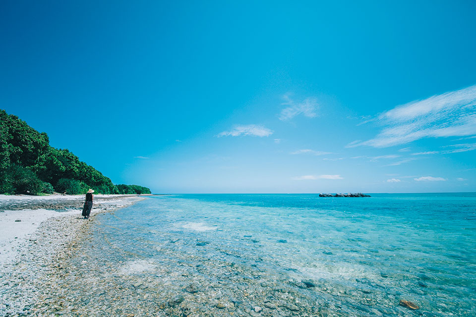
Совет
Как снимать еду на смартфон
В поездке еду чаще всего снимают на телефон, и главный совет Фукуи звучит неожиданно: отойдите от тарелки и включите зум. Объектив смартфона широкоугольный, поэтому вблизи передний край блюда раздувается, а под лампой в кадр ещё и попадает собственная тень.
Днём лучше сесть у окна и снимать в полуконтровом свете, когда тень ложится вперёд: так блюдо выглядит аппетитнее. Если лампа висит прямо над столом, достаточно прикрыть её свет салфеткой, и еда на снимке сразу меняется.
А дома, разбирая снимки, вспоминаешь то самое настроение, и маленький Такэтоми становится ещё дороже.
Остров Такэтоми
- Адрес
- префектура Окинава, уезд Яэяма, посёлок Такэтоми
- Телефон
- +81 980-82-5445 (туристическая ассоциация посёлка Такэтоми)
- Как добраться
- от порта Исигаки около 15 минут на скоростном катере, от порта Охара на острове Ириомотэ около 35 минут
HOSHINOYA Taketomi Island
- Адрес
- префектура Окинава, уезд Яэяма, посёлок Такэтоми, Такэтоми
- Телефон
- +81 570-073-066 (центр бронирования HOSHINOYA)
Фото: Майко Фукуи, OCVB.